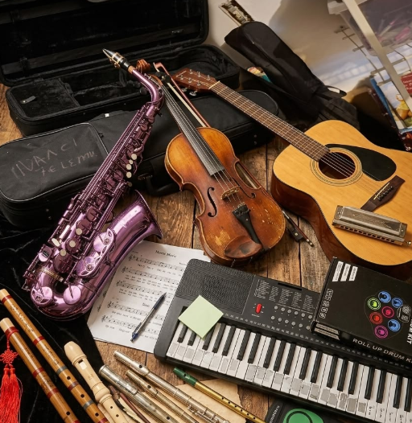
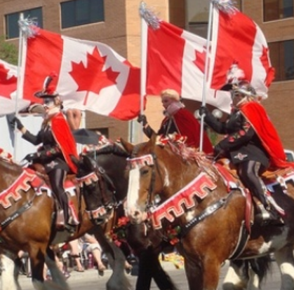
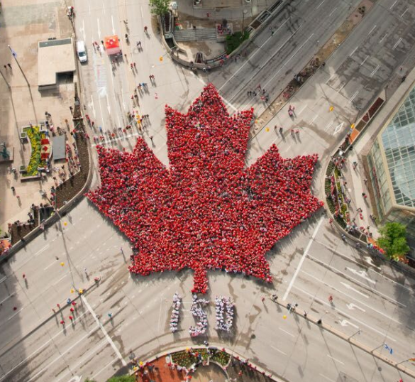

Music and arts: Canadian culture has a rich and diverse arts scene influenced by Indigenous traditions, French and British history, and cultures from around the world. Canada has produced many internationally known musicians, including Celine Dion, Drake, and The Weeknd. Canadian artists are also known for painting, literature, filmmaking, theatre, and Indigenous art, which often tells stories about history, nature, identity, and community. Together, these forms of art reflect the country's multicultural character.

Festivals and celebrations: Canada celebrates a wide variety of festivals throughout the year, reflecting its multicultural population and traditions. Canada Day, celebrated on July 1, is one of the country's biggest national celebrations, with fireworks, concerts, and community events. Winter festivals are also popular, especially in Canada's colder regions, while cultural and Indigenous celebrations showcase traditional music, dance, food, crafts, and stories. These events bring communities together and allow people to celebrate Canada's diverse heritage.
Sports: Sports play an important role in Canadian culture, with ice hockey being one of the country's most recognizable sports. Canadians also enjoy lacrosse, basketball, soccer, skiing, snowboarding, and curling. Because of Canada's cold winters and snowy landscapes, winter sports are particularly popular. Hockey, in particular, has become deeply connected to Canadian history and identity, with games bringing families and communities together.

National Symbols: Canada has several symbols that represent its history, identity, and connection to nature. The maple leaf is perhaps the most recognizable, appearing on the Canadian flag and representing the country's natural environment. The beaver is another important symbol and has a long history in Canada. The Canadian flag, with its red-and-white design and maple leaf, is a major national symbol, while the maple tree and maple syrup are also strongly associated with Canadian culture.